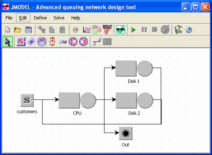

_________________________________________
You have to draw the network using the stations provided by JSIMgraph.
In the example you have to define a web server with one CPU and its 2 parallel disks; don't forget to connect all the elements as in the figure:

The Source generates the customers requiring a service to the web server.
CPU and the two Disks represent the web server as it actually is.
The Sink, which is named "Out" in the model, collects the finished request.
After drawing the model, define the customers classes.